Code
1+1[1] 2R and RStudioIn this course, we will be using R https://www.r-project.org/, an open-source (i.e., free) software package for data analysis. This software is available for essentially all computing platforms (e.g. Windows, Linux, Unix, Mac) is maintained and developed by a huge community of users including many of the world’s foremost statisticians.
R is a programming language but you may not be required to do a lot of programming for your course work. R includes functions which enables us to perform a full range of statistical analyses.
For installing R software, please visit https://cran.stat.auckland.ac.nz/ and follow the instructions.
Note that the R software will be sitting in the background in RStudio and you will not be using the standalone version of R in this course.
RStudio https://www.rstudio.com/products/rstudio/ is an integrated development environment (IDE) for R. It includes a console and a sophisticated code editor. It also contains tools for plotting, history, debugging, and management of workspaces and projects. RStudio has many other features such as authoring HTML, PDF, Word Documents, and slide shows. In order to download RStudio (Desktop edition, open source), go to
https://www.rstudio.com/products/rstudio/download/
Download the installation file and run it. Note that RStudio must be installed after installing R.
R/RStudio can also be run on a cloud platform at https://rstudio.cloud/ after creating a free account. Be aware though that some of the packages covered in this course may not work in the cloud platform.
If you open RStudio, you will see something similar to the screen shot shown in Figure 1:
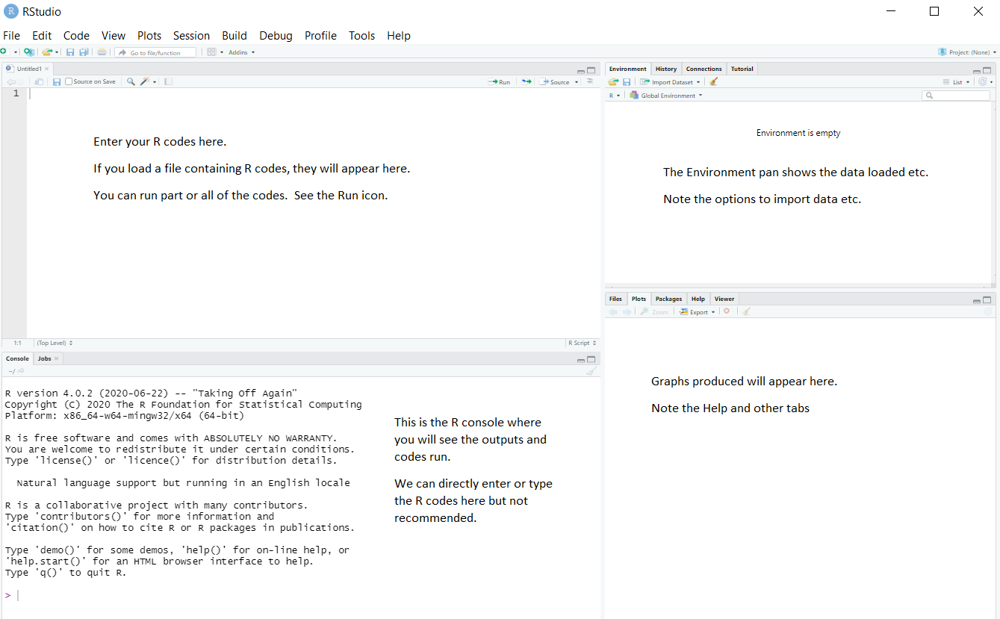
RStudio has many options, such as uploading files to a server, creating documents, etc. You will be using only a few of the options. You will not be using the menus such as Build, Debug, Profile at all in this course.
You can either type or copy and paste the R codes appearing in this section on to the R Script window and run them.
R basicsR is case sensitive, so data is not the same as DATA
<- (read as “gets”) is the assignment operator. That is, you use <- to assign some content to a variable. The operator = has a slightly different meaning but it can be used in the same way as <-. In R Studio, press ALT and minus key when you are in the R script mode (File >> New File >> R Script).
Comments are denoted by the # symbol. Anything after a # symbol is ignored by R .
R coding can be hard to write from scratch. So do not hesitate to adopt R codes written by others. Search the internet for R code to do what you want to do. The usual copy and paste trick works!
Working directory
In RStudio, set the working directory under the Session menu. It is a good idea to start your analysis as a new project in the File menu so that the entire work and data files can be saved and re-opened easily later on.
R/RStudio as a calculator
In RStudio, use the File >> New File >> R Script menu to type or copy and paste the commands and execute them
Type 1+1 to see 2 on the console (or ->Run the code in RStudio).
1+1[1] 2Type a=1;b=2;a/b to see 0.5.
a=1;b=2;a/b[1] 0.5Note that semicolon separates various commands. It is optional to use them as long as you type the commands one by one as follows:
a=1
b=2
a/b[1] 0.5There are many built-in functions. Try the following.
27^3 sqrt(10) round(sqrt(10),2) abs(-4) log(10) exp(10) rnorm(100) mean(rnorm(100)) sd(rnorm(100))
You may wonder what was the base used for log(10). A help on this can be obtained by placing a question mark (?) before log as ?log or by help(log)
There are a few exceptions. The command ?if wont work but ?"if" will. In other words, ?"log" or help("log") are safer ways of getting help on “built-in” functions.
In RStudio, use the R Editor (menu File > New Script) to type the commands and submit them (shortcut: CNTRL+R).`
Default examples
The command example() will produce the available HELP examples, and will work for most functions. For example, try example(boxplot). You will see many boxplot examples such as the following:
boxplot(count ~ spray, data = InsectSprays, col = "lightgray")
There are also demos available, explore using the command demo(). The basic R system produces somewhat old style graphs.
So we will be largely using the newer plotting system ggplot which is part of the tidyverse suite of packages; see https://www.tidyverse.org/.
Let’s load that package now:
library(tidyverse)A huge number of other dedicated packages are available to improve the power of R. Many R packages are hosted at a repository called CRAN (Comprehensive R Archive Network). The package install option within RStudio can download and install these optional packages under the menu Packages >> Install. You can also do this using the command install.packages. For example
install.packages(c("tidyverse", "car"), dependencies = TRUE)
This command installs two packages tidyverse and car in one go.
Contributed R packages are grouped in various headings at https://cran.r-project.org/web/views/. They can be installed in bulk using the ctv package command install.views().
You might have to install quite a few packages as you work through this course.
I encourage you to get into the habit of using Quarto *.qmd files rather than raw *.R files. Heard of Rmarkdown? Well, Quarto is the successor to Rmarkdown. So, if you’re just starting to use R, then you should begin with Quarto rather than Rmarkdown, because most/all new development will be going into Quarto.
Quarto files contain text and code, and can be ‘knitted’ to produce a nicely formatted document, usually in HTML or PDF format, containing sections, text, code, plots, and output. Quarto can also be used to make websites; in fact, the website for this course was made using Quarto.
Here’s some information to get you started: https://quarto.org/docs/get-started/hello/rstudio.html.
And some other useful tips: https://r4ds.hadley.nz/quarto.
Instead of putting your R code into an ordinary directory on your computer, I encourage you to use Rstudio Projects. A Project is a self-contained directory of code and data, pertaining to a particular project. You might create a single project for your work during this course, with a folder for workshops and another folder for assignments.
Here’s a primer on R projects: https://r4ds.hadley.nz/workflow-scripts#projects
An advantage of Projects is that they work nicely with GitHub, a cloud code-repository service. If you plan to do any programming during your career, you’ll probably need to learn how to use GitHub. It can be a little tricky to use at first. You don’t have to use it for this course, but feel free to have a go at it if you’re interested.
If you’re using R projects and GitHub, this online book is a great place to start: Happy Git and GitHub for the useR.
Most data sets we shall consider in this course are in a tabular form. This means that each variable is a column, each row is an observation, columns are separated by white space (or comma), and each column or row may have a name.
If the data file is stored locally, you should put the data into the same directory as your Quarto or R markdown script. That way, you can (usually) load it easily without having to type the full pathway (e.g., mydata.csv rather than C:/Users/anhsmith/Work/Project1/data/mydata.csv). Better yet, Projects make this much easier.
You can also load data from the web using a URL. For example,
read_csv("https://www.massey.ac.nz/~anhsmith/data/rangitikei.csv")Rows: 33 Columns: 10
── Column specification ────────────────────────────────────────────────────────
Delimiter: ","
dbl (10): id, loc, time, w.e, cl, wind, temp, river, people, vehicle
ℹ Use `spec()` to retrieve the full column specification for this data.
ℹ Specify the column types or set `show_col_types = FALSE` to quiet this message.# A tibble: 33 × 10
id loc time w.e cl wind temp river people vehicle
<dbl> <dbl> <dbl> <dbl> <dbl> <dbl> <dbl> <dbl> <dbl> <dbl>
1 1 1 2 1 1 2 2 1 37 15
2 2 1 1 1 1 2 1 2 23 6
3 3 1 2 1 1 2 2 3 87 31
4 4 2 2 1 1 2 1 1 86 27
5 5 2 1 1 1 2 2 2 19 2
6 6 2 2 1 2 1 3 3 136 23
7 7 1 2 2 2 2 2 3 14 8
8 8 1 2 1 2 2 2 3 67 26
9 9 1 1 2 1 3 1 2 4 3
10 10 2 2 1 2 2 2 3 127 45
# ℹ 23 more rowsWe’d usually want to store the data as an object though, like so:
rangitikei <- read_csv("https://www.massey.ac.nz/~anhsmith/data/rangitikei.csv")Rows: 33 Columns: 10
── Column specification ────────────────────────────────────────────────────────
Delimiter: ","
dbl (10): id, loc, time, w.e, cl, wind, temp, river, people, vehicle
ℹ Use `spec()` to retrieve the full column specification for this data.
ℹ Specify the column types or set `show_col_types = FALSE` to quiet this message.Now the data are available in R as an object.
glimpse(rangitikei)Rows: 33
Columns: 10
$ id <dbl> 1, 2, 3, 4, 5, 6, 7, 8, 9, 10, 11, 12, 13, 14, 15, 16, 17, 18,…
$ loc <dbl> 1, 1, 1, 2, 2, 2, 1, 1, 1, 2, 2, 2, 2, 1, 1, 1, 2, 2, 2, 1, 1,…
$ time <dbl> 2, 1, 2, 2, 1, 2, 2, 2, 1, 2, 2, 2, 2, 2, 2, 2, 2, 1, 2, 1, 2,…
$ w.e <dbl> 1, 1, 1, 1, 1, 1, 2, 1, 2, 1, 2, 1, 1, 1, 1, 2, 2, 1, 1, 1, 2,…
$ cl <dbl> 1, 1, 1, 1, 1, 2, 2, 2, 1, 2, 1, 2, 1, 1, 1, 2, 2, 2, 1, 2, 2,…
$ wind <dbl> 2, 2, 2, 2, 2, 1, 2, 2, 3, 2, 2, 2, 1, 2, 2, 2, 2, 2, 2, 3, 2,…
$ temp <dbl> 2, 1, 2, 1, 2, 3, 2, 2, 1, 2, 2, 3, 1, 2, 2, 2, 3, 2, 2, 2, 2,…
$ river <dbl> 1, 2, 3, 1, 2, 3, 3, 3, 2, 3, 1, 3, 1, 3, 1, 1, 2, 1, 2, 2, 3,…
$ people <dbl> 37, 23, 87, 86, 19, 136, 14, 67, 4, 127, 43, 190, 50, 47, 32, …
$ vehicle <dbl> 15, 6, 31, 27, 2, 23, 8, 26, 3, 45, 7, 53, 22, 18, 10, 3, 11, …If the data are stored as a *.csv or “comma separated values” file, then you can use the read.csv() or read_csv() function to load the file. If it’s a text file with columns separated by spaces or tabs, you can use read.table() or read_table() function. The ones with underscores ( read_csv() and read_table()) are in the readr package, so you’ll need to load it first (though readr is part of tidyverse, so if you load tidyverse you’re all set).
You can also load Microsoft Excel files using functions read_excel(), available in the readxl package.
As an exercise, try importing the Telomeres data file (in Excel format) available at
https://rs.figshare.com/ndownloader/files/22850096
Note that Excel files usually contain blanks for missing or unreported data or allocate many rows for variable description, which can cause issues while importing them.
Native R data, stored as *.RData or *.rds files, can be loaded using the load() or readRDS() functions, respectively.
SQLite is a public-domain, light-weight database engine (https://sqlite.org/about.html). The R package RSQLite will import *.sqlite files. Databases are usually large in size, and hence R packages such as dbplyr can be used package to query a database.
ggplot2The R library ggplot2 is very powerful for plotting but you may find the syntax little strange. There are plenty of examples at the ggplot2 online help website. The ggplot2 package is loaded as part of the tidyverse set of packages.
Advantages of ggplot2 are the following:
Some disadvantages of ggplot2 are the following:
rgl package instead)igraph and other packages)plotly, ggvis and other packages)The main idea behind the grammar of graphics of (Wilkinson 2005) is to mimic the manual graphing approach and define building blocks and combine them to create a graphical display. The building blocks of a graph are:
If have not installed ggplot2 or tidyverse, install it with the following commands.
install.packages("ggplot2")We can now load the ggplot2 library with the commands:
library(ggplot2)In order to work with ggplot2, we must have a data frame or a tibble containing our data. We need to specify the aesthetics or how the columns of our data frame can be translated into positions, colours, sizes, and shapes of graphical elements.
The geometric objects and aesthetics of the ggplot2 system are explained below:
aes)In ggplot land aesthetic means visualisation features or aesthetics. These are
Aesthetic mappings are set with the aes() function.
geom)Geometric objects or geoms are the actual marking or inking on a plot such as:
geom_point, for scatter plots, dot plots, etc)geom_line, for time series, trend lines, etc)geom_boxplot, for boxplots)A plot must have at least one geom but there is no upper limit. In order to add a geom to a plot, the + operator is employed. A list of available geometric objects can be obtained by typing geom_<tab> in Rstudio. The following command can also be used which will open a Help window.
help.search("geom_", package = "ggplot2")Consider the study guide dataset rangitikei.txt (Recreational Use of the Rangitikei river). The first 10 rows of this dataset are shown below:
id loc time w.e cl wind temp river people vehicle
1 1 1 2 1 1 2 2 1 37 15
2 2 1 1 1 1 2 1 2 23 6
3 3 1 2 1 1 2 2 3 87 31
4 4 2 2 1 1 2 1 1 86 27
5 5 2 1 1 1 2 2 2 19 2
6 6 2 2 1 2 1 3 3 136 23
7 7 1 2 2 2 2 2 3 14 8
8 8 1 2 1 2 2 2 3 67 26
9 9 1 1 2 1 3 1 2 4 3
10 10 2 2 1 2 2 2 3 127 45The description of the variables is given below:
loc - two locations were surveyed, coded 1, 2
time - time of day, 1 for morning, 2 for afternoon
w.e - coded 1 for weekend, 2 for weekday
cl- cloud cover, 1 for >50%, 2 for <50%
wind- coded 1 through 4 for increasing wind speed
temp - temperature, 1, 2 or 3 increasing temp
river- murkiness of river in 3 increasing categories
people - number of people at that location and time
vehicle- number of vehicles at that location at that time
This dataset is downloaded from the web using the following commands.
my.data <- read.csv(
"https://www.massey.ac.nz/~anhsmith/data/rangitikei.csv",
header=TRUE
)ggplot(data = my.data,
mapping = aes(x = vehicle, y = people)
) +
geom_point()
The aes part defines the “aesthetics”, which is how columns of the dataframe map to graphical attributes such as x and y position, colour, size, etc. An aesthetic can be either numeric or categorical and an appropriate scale will be used. After this, we add layers of graphics. geom_point layer is employed to map x and y and we need not specify all the options for geom_point.
The aes() can be specified within the ggplot function or as its own separate function. I prefer this format.
ggplot(my.data) +
aes(x = vehicle, y = people) +
geom_point()
We can add a title using labs() or ggtitle() functions. Try-
ggplot(my.data) +
aes(x = vehicle, y = people) +
geom_point() +
ggtitle("No. of people vs No. of vehicles")or
ggplot(my.data)+
aes(x = vehicle, y = people) +
geom_point() +
labs(title = "No. of people vs No. of vehicles")Note that labs() allows captions and subtitles.
geom_smooth is additionally used to show trends.
ggplot(my.data) +
aes(x = vehicle, y = people) +
geom_point() +
geom_smooth()`geom_smooth()` using method = 'loess' and formula = 'y ~ x'
Similar to geom_smooth, a variety of geoms are available.
ggplot(my.data) +
aes(x = factor(wind), y = people) +
geom_boxplot()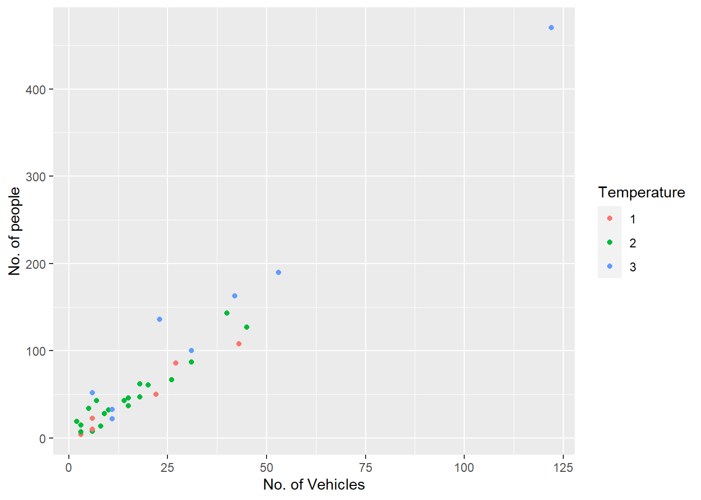
Each geom accepts a particular set of mappings;for example geom_text() accepts a labels mapping. Try-
ggplot(my.data) +
aes(x = vehicle, y = people) +
geom_point() +
geom_text(aes(label = w.e),
size = 5)The faceting option allows a collection of small plots with the same scales. Try-
ggplot(my.data) +
aes(x=vehicle, y=people) +
geom_point() +
facet_wrap(~ river) 
Faceting is the ggplot2 option to create separate graphs for subsets of data. ggplot2 offers two functions for creating small multiples:
facet_wrap(): define subsets as the levels of a single grouping variablefacet_grid(): define subsets as the crossing of two grouping variablesThe following arguments are common to most scales in ggplot2:
Specific scale functions may have additional arguments. Some of the available Scales are:
| Scale | Examples |
|---|---|
scale_color_ |
scale_color_discrete |
scale_fill_ |
scale_fill_continuous |
scale_size_ |
scale_size_manual |
scale_size_discrete |
|
scale_shape_ |
scale_shape_discrete |
scale_shape_manual |
|
scale_linetype_ |
scale_linetype_discrete |
scale_x_ |
scale_x_continuous |
scale_x_log |
|
scale_x_date |
|
scale_y_ |
scale_y_reverse |
scale_y_discrete |
|
scale_y_datetime |
In RStudio, we can type scale_ followed by TAB to get the whole list of available scales.
Try-
ggplot(my.data) +
aes(x = vehicle, y = people, color = factor(temp)) +
geom_point() +
scale_x_continuous(name = "No. of Vehicles") +
scale_y_continuous(name = "No. of people") +
scale_color_discrete(name = "Temperature")
The other coding option is shown below:
ggplot(my.data) +
aes(x = vehicle, y = people, color = factor(temp)) +
geom_point() +
xlab("No. of Vehicles") +
ylab("No. of people") +
labs(colour="Temperature") Note that a desired graph can be obtained in more than one way.
The ggplot2 theme system handles plot elements (not data based) such as
Built-in themes include:
theme_gray() (default)theme_bw()theme_minimal()theme_classic()p1 <- ggplot(my.data) +
aes(x = vehicle, y = people, color = factor(temp)) +
geom_point()Note that the graph is assigned an object name p1 and nothing will be printed unless we then print the object p1.
p1 <- ggplot(my.data) +
aes(x = vehicle, y = people, color = factor(temp)) +
geom_point()
p1
Try-
p1 + theme_light()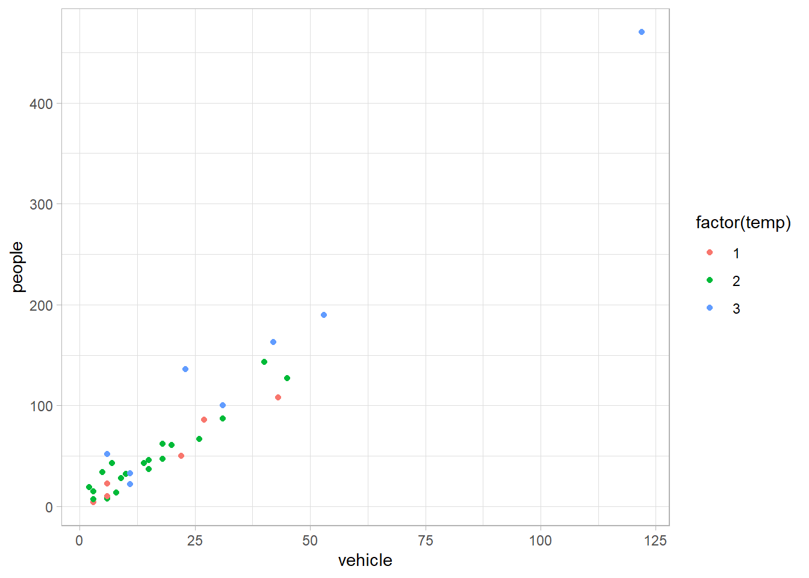
p1 + theme_bw()
Specific theme elements can be overridden using theme(). For example:
p1 + theme_minimal() +
theme(text = element_text(color = "red"))
All theme options can be seen with ?theme.
To specify a theme for a whole document, use
theme_set(theme_minimal())Minimal graphing can be done using the qplot option that will produce a few standard formatted graphs quickly.
qplot(people, vehicle, data = my.data, colour = river)Warning: `qplot()` was deprecated in ggplot2 3.4.0.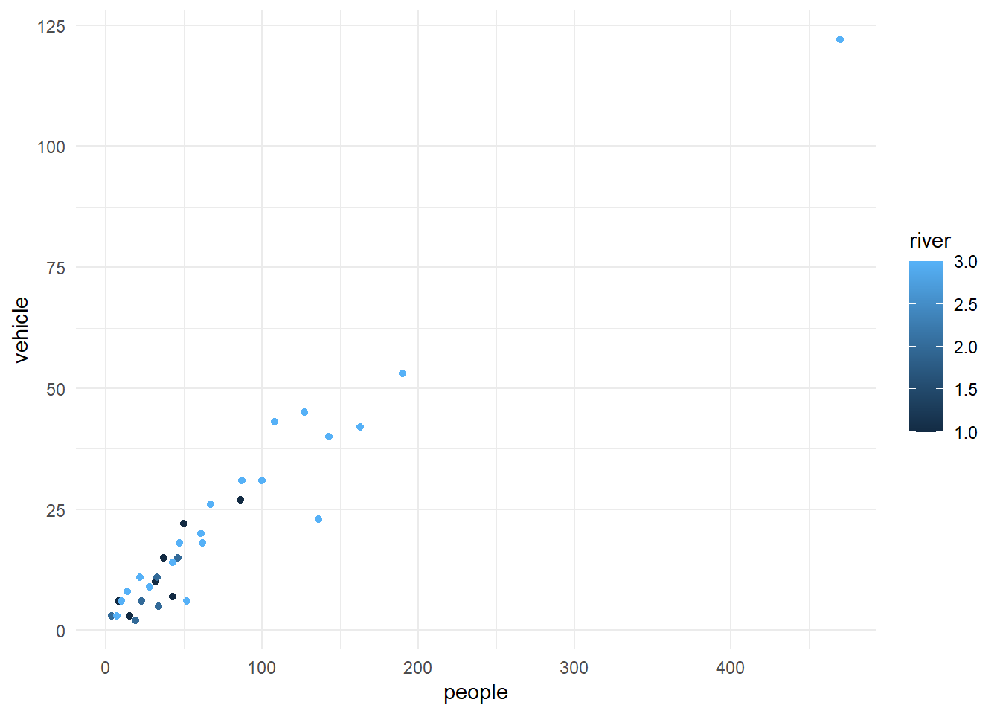
Try-
qplot(people, data = my.data)
qplot(people, fill=factor(river), data=my.data)
qplot(people, data = my.data, geom = "dotplot")
qplot(factor(river), people, data = my.data, geom = "boxplot")
A cheat sheet for ggplot2 is available at https://www.rstudio.com/resources/cheatsheets/ (optional to download). There are many other packages which incorporate ggplot2 based graphs or dependent on it.
The library patchwork allows complex composition arbitrary plots, which are not produced using the faceting option. Try
library(patchwork)
p1 <- qplot(people, data = my.data, geom = "dotplot")
p2 <- qplot(people, data = my.data, geom = "boxplot")
p3 <- ggplot(my.data, aes(x = vehicle, y = people)) + geom_point()
(p1 + p2) / p3 +
plot_annotation("My title", caption = "My caption")Bin width defaults to 1/30 of the range of the data. Pick better value with
`binwidth`.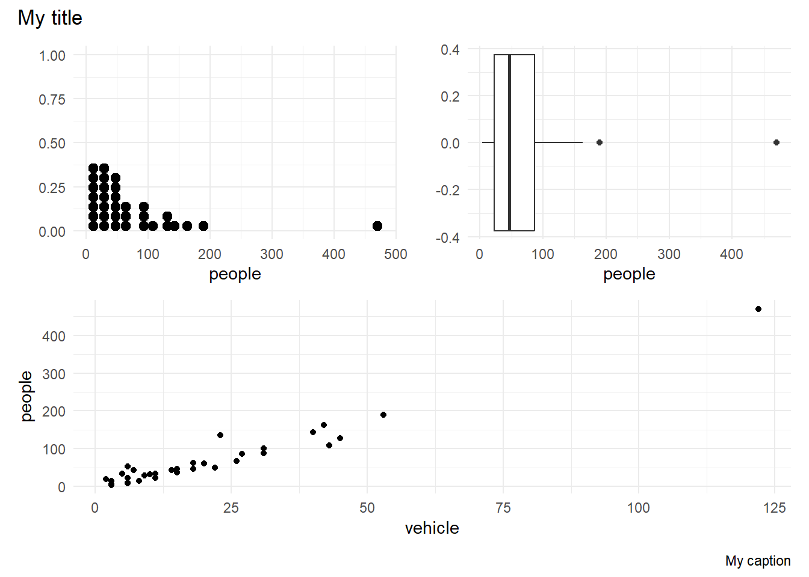
ggplot builderA nice R package, known as esquisse is available to build few simple ggplot graphics interactively. This may help in the early stages of learning to use ggplot graphing.
If this package is not installed, install it first & then try.
library(esquisse)
options("esquisse.display.mode" = "browser")
esquisse::esquisser(data = iris)You can also load the desired dataset within R studio and select the dataset.
The other option is to load a dataset from the course data web folder and then launch esquisse. Try-
url1 <- "https://www.massey.ac.nz/~anhsmith/data/rangitikei.RData"
download.file(url = url1, destfile = "rangitikei.RData")
load("rangitikei.RData")
esquisse::esquisser(data = rangitikei, viewer = "browser")You can also download the associated R codes or save the graph within the esquisse web app.
tidyverse and related packagesIn the recent years, tidyverse suite of packages, which includes ggplot2 has become the popular tool for data handling and plotting. In this section, a brief intro to the data management packages such as dplyr is given.
For detailed coverage of the tidyverse system, go to https://www.tidyverse.org/.
dplyrThe following six functions of dplyr are very useful for data wrangling :
select()filter()arrange()mutate()summarise()group_by()There are many other functions such as transmute() which will add newly calculated columns to the existing data frame but drop all unused columns. The across() function extends group_by() and summarise() functions for multiple column and function summaries. For example, you like to report rounded data in a table, which calls for an operation across both rows and columns.
The piping operation is a fundamental aspect of computer programming. The semantics of pipes is taking the output from the left-hand side and passing it as input to the right-hand side.
The R package magrittr introduced the pipe operator %>% and can be pronounced as “then”. In RStudio windows/Linux versions, press Ctrl+Shift+M to insert the pipe operator. On a Mac, use Cmd+Shift+M.
R also has its own pipe, |>, which is an alternative to %>%. I tend to use |>. If you want to change the pipe inserted automatically with Ctrl+Shift+M, find on the menu Tools > Global Options, then click on Code and check the box that says “Use Native Pipe Operator”.
We often pipe the dplyr functions, and the advantage is that we show the flow of data manipulation and subsequent graphing. This approach also helps to save memory, and dataframes are not unnecessarily created, a necessity for a big data framework.
Try the following examples after loading the rangitikei dataset.
select()
my.data <- read.csv("https://www.massey.ac.nz/~anhsmith/data/rangitikei.csv", header=TRUE)
names(my.data) [1] "id" "loc" "time" "w.e" "cl" "wind" "temp"
[8] "river" "people" "vehicle"library(tidyverse)
new.data <- my.data |>
select(people, vehicle)
names(new.data)[1] "people" "vehicle"my.data |>
select(people, vehicle) |>
ggplot() +
aes(x=people, y=vehicle) +
geom_point()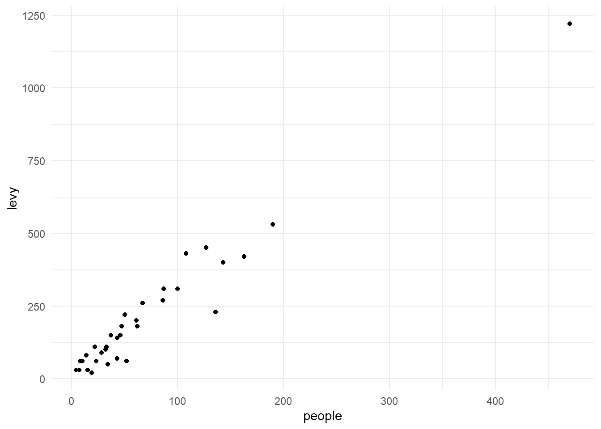
We select two columns and create a scatter plot with the above commands.
filter()
my.data |>
filter(wind==1) |>
select(people, vehicle) |>
ggplot() +
aes(x=people, y=vehicle) +
geom_point()
The above commands filter the data for the low wind days and plots vehicle against people.
arrange()
my.data |>
filter(wind==1) |>
arrange(w.e) |>
select(w.e, people, vehicle) w.e people vehicle
1 1 136 23
2 1 50 22
3 1 100 31
4 1 470 122
5 2 22 11mutate()
Assume that a $10 levy is collected for each vehicle. We can create this new levy column as follows.
my.data |>
mutate(levy = vehicle*10) |>
select(people, levy) |>
ggplot() +
aes(x = people, y=levy) +
geom_point()
Note that the pipe operation was used to create a scatter plot using the newly created column.
summarise()
my.data |>
summarise(total = n(),
avg = mean(people)
) total avg
1 33 71.72727We obtain the selected summary measures namely the total and the mean number of people. Try-
my.data |>
filter(wind == 1) |>
summarise(total = n(),
avg = mean(people)
) total avg
1 5 155.6group_by()
We obtain the wind group-wise summaries below:
my.data |>
group_by(wind) |>
summarise(total=n(),
avg=mean(people))# A tibble: 3 × 3
wind total avg
<int> <int> <dbl>
1 1 5 156.
2 2 26 59.7
3 3 2 19 There are many more commands such as the transmute function which conserves the only the needed columns. Try
my.data |>
group_by(wind, w.e) |>
transmute(total=n(),
avg=mean(people))# A tibble: 33 × 4
# Groups: wind, w.e [6]
wind w.e total avg
<int> <int> <int> <dbl>
1 2 1 18 72.1
2 2 1 18 72.1
3 2 1 18 72.1
4 2 1 18 72.1
5 2 1 18 72.1
6 1 1 4 189
7 2 2 8 31.8
8 2 1 18 72.1
9 3 2 1 4
10 2 1 18 72.1
# ℹ 23 more rowsA simple frequency table is found using count(). Try-
my.data |>
group_by(wind, w.e) |>
count(temp)# A tibble: 10 × 4
# Groups: wind, w.e [6]
wind w.e temp n
<int> <int> <int> <int>
1 1 1 1 1
2 1 1 3 3
3 1 2 3 1
4 2 1 1 4
5 2 1 2 12
6 2 1 3 2
7 2 2 2 6
8 2 2 3 2
9 3 1 2 1
10 3 2 1 1my.data |>
group_by(wind, w.e) |>
count(temp, river)# A tibble: 16 × 5
# Groups: wind, w.e [6]
wind w.e temp river n
<int> <int> <int> <int> <int>
1 1 1 1 1 1
2 1 1 3 3 3
3 1 2 3 3 1
4 2 1 1 1 1
5 2 1 1 2 1
6 2 1 1 3 2
7 2 1 2 1 3
8 2 1 2 2 2
9 2 1 2 3 7
10 2 1 3 3 2
11 2 2 2 1 2
12 2 2 2 3 4
13 2 2 3 2 1
14 2 2 3 3 1
15 3 1 2 2 1
16 3 2 1 2 1The count() is useful to check the balanced nature of the data when many subgroups are involved.
tidyrBy the phrase tidy data, it is meant the preferred way of arranging data that is easy to analyse. The principles of tidy data are:
The hospital admissions dataset is untidy because it does allocate many columns for a variable.
my.data <- read.table(
"https://www.massey.ac.nz/~anhsmith/data/hospital.txt",
header=TRUE, sep=",")
head(my.data) YEAR PERI NORTH1 NORTH2 NORTH3 SOUTH1 SOUTH2 SOUTH3
1 1980 1 0 4 27 4 16 27
2 1980 2 6 11 31 8 18 21
3 1980 3 6 4 25 20 16 24
4 1980 4 1 10 31 22 17 20
5 1980 5 4 16 22 21 30 31
6 1980 6 3 8 28 31 20 30The main response variable namely the number of admissions is allocated different columns depending on the North and South locations. This format is also called wide format which can be made into a tidy long format. Try-
library(tidyr)
my.data |>
gather(NORTH1, NORTH2, NORTH3,
SOUTH1, SOUTH2, SOUTH3)The command spread() does the opposite to gather(). The tidyr package many other functions such as unite(), separate() etc to deal with columns. A better approach would be to use the dplyr function pivot_longer(). Try-
my.data |>
pivot_longer(cols = NORTH1:SOUTH3,
names_to = "location",
values_to = "Admissions")The command pivot_wider() does the opposite to pivot_longer()
The dplyr package also has functions to deal with two-tables which can be joined either conditionally or unconditionally using commands such as full_join(). For a detailed notes and examples, you may visit https://dplyr.tidyverse.org/articles/two-table.html but we will be using such functions very occasionally in this course.
The reshape2 and data.table packages also have functions to do the same task.
A data analysis session in R/RStudio involves loading the data, graphing, and modelling. You finally save your outputs or produce a Report.
When you begin your analysis in RStudio, start it as a new project in the File menu. You can save all your work in one go when you quit the RStudio software. You can always load your project later on to continue the analysis.
For the sack of simplicity, let us use an R default dataset called stackloss giving the operational data of a plant for the oxidation of ammonia to nitric acid.
data("stackloss")
head(stackloss, 5) Air.Flow Water.Temp Acid.Conc. stack.loss
1 80 27 89 42
2 80 27 88 37
3 75 25 90 37
4 62 24 87 28
5 62 22 87 18The distribution of the response variable stack.loss is explored using a histogram below:
stackloss |>
ggplot() +
aes(stack.loss) +
geom_histogram(bins = 5)
Histograms are not good displays for small datasets. In order to see the size or length of stack.loss data, we select the stack.loss variable and then summarise the size using the n() option.
stackloss |>
select(stack.loss) |>
summarise(n()) n()
1 21The following commands will also work.
length(stackloss$stack.loss)[1] 21stackloss |> pull(stack.loss) |> length()[1] 21We may also explore how well stack.loss is related Air.Flow to using a scatter plot. For this, we type the command plot
stackloss |>
ggplot() +
aes(y=stack.loss, x=Air.Flow) +
geom_point()
The relationship is roughly linear. So we may fit a straight line model using the lm command.
st.line.model <- lm(stack.loss~Air.Flow, data=stackloss)We can query this model asking for its summary using the summary() function.
summary(st.line.model)
Call:
lm(formula = stack.loss ~ Air.Flow, data = stackloss)
Residuals:
Min 1Q Median 3Q Max
-12.2896 -1.1272 -0.0459 1.1166 8.8728
Coefficients:
Estimate Std. Error t value Pr(>|t|)
(Intercept) -44.13202 6.10586 -7.228 7.31e-07 ***
Air.Flow 1.02031 0.09995 10.208 3.77e-09 ***
---
Signif. codes: 0 '***' 0.001 '**' 0.01 '*' 0.05 '.' 0.1 ' ' 1
Residual standard error: 4.098 on 19 degrees of freedom
Multiple R-squared: 0.8458, Adjusted R-squared: 0.8377
F-statistic: 104.2 on 1 and 19 DF, p-value: 3.774e-09R default model summary is bit too long. We may just glance the overall quality measures of the fitted model as follows:
library(tidyverse)
library(broom)
library(kableExtra)
Attaching package: 'kableExtra'The following object is masked from 'package:dplyr':
group_rowsout1 <- st.line.model |>
glance() |>
mutate(across(where(is.numeric),
~round(., 2))
)
out1 |> t() |> kable() | r.squared | 0.85 |
| adj.r.squared | 0.84 |
| sigma | 4.10 |
| statistic | 104.20 |
| p.value | 0.00 |
| df | 1.00 |
| logLik | -58.37 |
| AIC | 122.74 |
| BIC | 125.87 |
| deviance | 319.12 |
| df.residual | 19.00 |
| nobs | 21.00 |
For processing using Rmarkdown, we may use the codes which will give a tidy tabular output in the word-processed output.
out1 <- st.line.model |>
tidy() |>
mutate(across(where(is.numeric), ~round(., 2)))
kable(out1)| term | estimate | std.error | statistic | p.value |
|---|---|---|---|---|
| (Intercept) | -44.13 | 6.11 | -7.23 | 0 |
| Air.Flow | 1.02 | 0.10 | 10.21 | 0 |
The fitted model is shown below:
ggplot(stackloss) +
aes(
y = stack.loss,
x = Air.Flow
) +
geom_point() +
geom_smooth(
method = lm,
se = FALSE
)`geom_smooth()` using formula = 'y ~ x'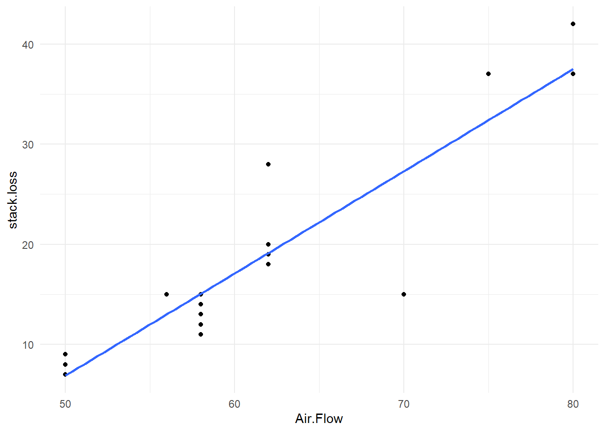
The fitted model can also be displayed on the scatter plot using the old style plot and abline commands.
plot(stack.loss ~ Air.Flow, data=stackloss)
st.line.model <- lm(stack.loss~Air.Flow, data=stackloss)
abline(st.line.model)It is a good idea to check the quality of secondary data sourced from elsewhere. For example, there could be missing values in the dataset. Consider the Telomeres data downloaded from http://www.massey.ac.nz/~anhsmith/data/rsos192136_si_001.xlsx
# #| eval: false
# url <- "http://www.massey.ac.nz/~anhsmith/data/rsos192136_si_001.xlsx"
# destfile <- "rsos192136_si_001.xlsx"
# #
# download.file(url, destfile)url <- "http://www.massey.ac.nz/~anhsmith/data/rsos192136_si_001.xlsx"
destfile <- "rsos192136_si_001.xlsx"
curl::curl_download(url, destfile)library(readxl)
rsos192136_si_001 <- read_excel("rsos192136_si_001.xlsx")The missingness of data can be quickly explored using many R packages. The downloaded Telomeres dataset contain many missing values.
library(VIM)Loading required package: colorspaceLoading required package: gridVIM is ready to use.Suggestions and bug-reports can be submitted at: https://github.com/statistikat/VIM/issues
Attaching package: 'VIM'The following object is masked from 'package:datasets':
sleepres <- rsos192136_si_001 |>
aggr(sortVar=TRUE) |>
summary() |>
pluck("combinations")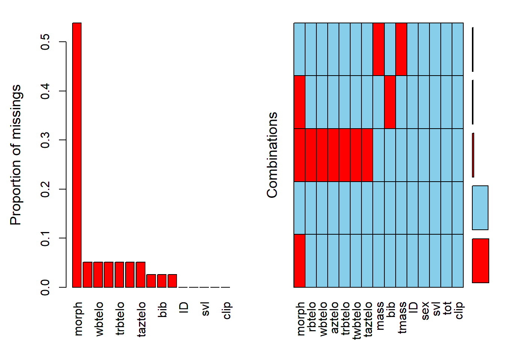
or
library(naniar)
gg_miss_var(rsos192136_si_001) The term Missing completely at random (MCAR) is often used to mean there is there is no pattern to the missing data themselves or alternatively the missingness is not related to any other variable or data in the dataset. In other words, the probability of missingness is the same for all units. So no bias is caused by the missing data, and we can discard cases with missing data when we fit models.
In practice, we often find missing data do have a relationship with other variables in the dataset but the actual missing values are random. This situation of data conditionally missing at random is called Missing at random (MAR) data. For a particular survey question, the response rate may differ depending on the respondent’s gender. In this situation, the actual missingness may be random but still related to the gender variable.
Missing not at random (MNAR) is the pattern when missingness is related to other variables in the dataset, as well as the values of the missing data are not random. In other words, there is a predictable pattern in the missingness. So we cannot avoid the bias when missing cases are omitted.
There are also situations such as censoring where we just record a single value without actually measuring the variable of interest.
Imputation of data can be made except for the case of MCAR type. A number of R packages are available for data imputation; see https://cran.r-project.org/web/views/MissingData.html or https://stefvanbuuren.name/fimd/. We may occasionally cover data imputation issue in an assignment question.
There are also R packages to perform automatic investigation for data cleaning. Try-
library(dataMaid)
makeDataReport(rsos192136_si_001, output="html", replace=TRUE)
# or
library(DataExplorer)
create_report(rsos192136_si_001)Rule based validation is enabled in the R package validate. The R package janitor has a function get_dupes() to find duplicate entries in the dataset. Cleaner package will allow to clean the variables so that the columns are consistent in terms of the factor, date, numerical variable types. You will be largely using data that are already cleaned for your assignments but be aware that you have to perform data cleaning and perform necessary quality checks before analysis.
There are a number of online sources (tutorials, discussion groups etc) for getting help with R. These links are available at your class Stream. You may also use the advanced search facility of Goggle at https://www.google.com/advanced_search; more specifically at https://stackoverflow.com.
For further online tutorials
For further graphing example
Getting help:
For a simple bar chart, try
freq <- c(1, 2, 3, 4, 5)
names <- c("A","B","C","D","E")
barplot(freq, names.arg=names)Let us generate random data from the normal distribution N(10,1) distribution and form a batch of data for illustrating graphing in R. Try the following commands one by one.
x <- rnorm(40, 10,1)
hist(x)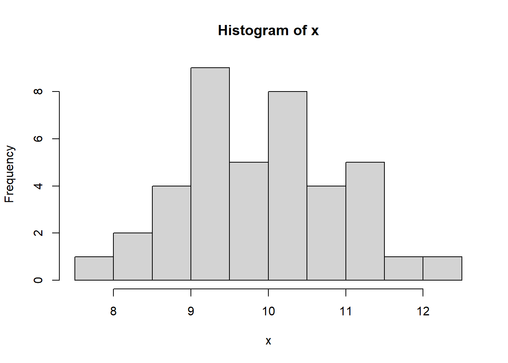
boxplot(x)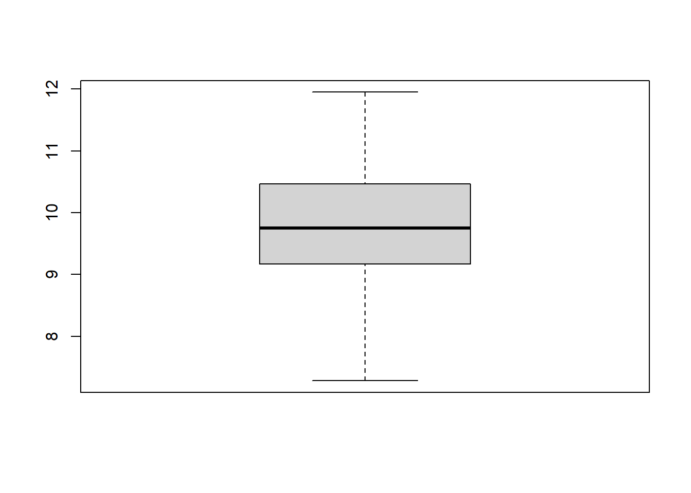
plot(x)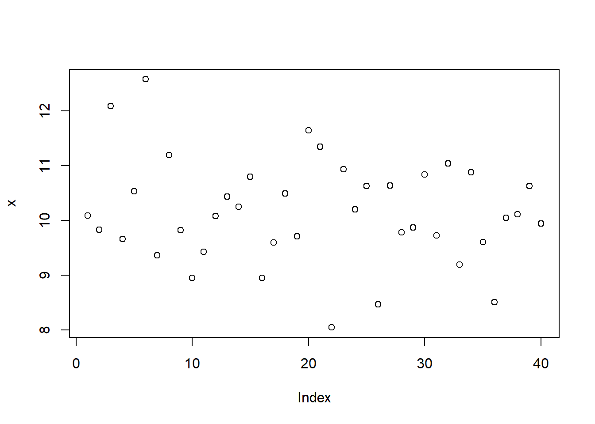
plot(density(x), xlab="")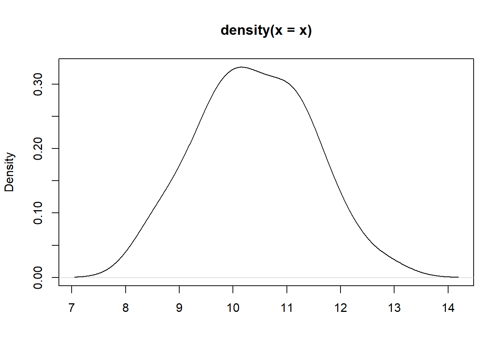
stripchart(round(x,1), method = "stack", pch=20)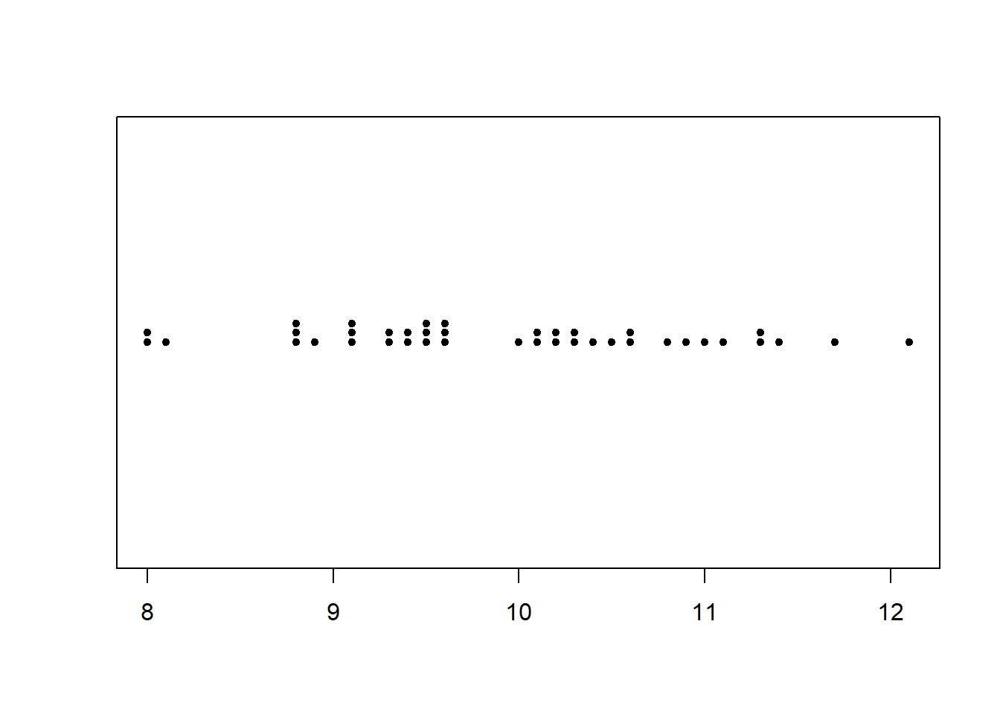
plot(ecdf(x), verticals=TRUE)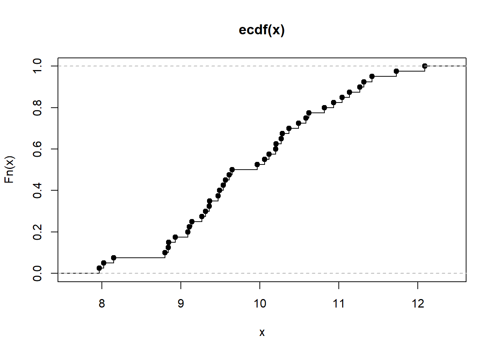
We can form a matrix of order 3X2 or (or 2X3) and display all the above six graphs in a panel. This is done using the option par(), which controls the graphics parameters.
x <- rnorm(40, 10,1)
par(mfrow = c(2, 3))
hist(x)
boxplot(x)
plot(x)
plot(density(x), xlab='')
stripchart(round(x,1), method = "stack", pch=20)
plot(ecdf(x), verticals=TRUE)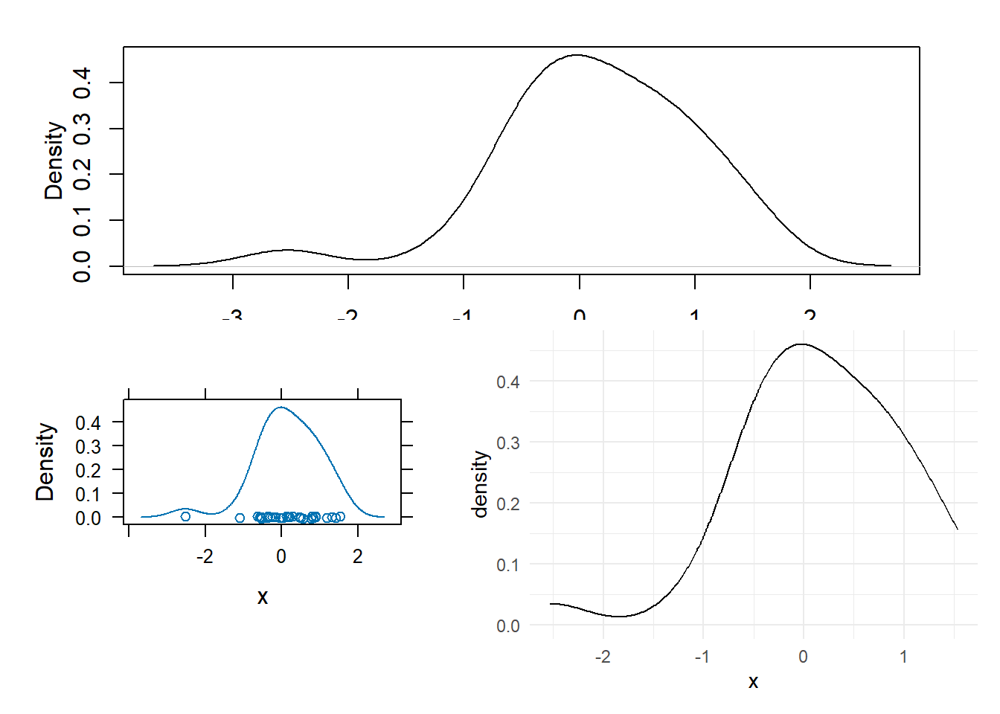
Although we shall not cover them here, many plotting options can be set using par() function; including size of margins, font types, the colour of axis labels etc. See help("par"). The option par(new=T) will be useful for an overlaid graph (instead of splitting a graph). Try the following:
x <- rnorm(40, 10,1)
plot(x, type = "o", pch = 1, ylab = "",
ylim = c(6.5, 13.5), lty = 1)
par(new=T)
y <- rnorm(40, 10,1)
plot(y, type = "o", pch = 2,
ylab = "Two Batches of Random Normal Data",
ylim = c(6.5, 13.5), lty = 2)Note that pch specifies for the plotting character and lty specifies the line type. You can add a legend by the following command line:
legend("topright", c("Batch I", "Batch II"), pch=1:2, lty=1:2)
For scatter and other related plots, the command is plot(). Try
x <- rnorm(40, 10,1)
y <- rnorm(40, 10,1)
plot(y~x) # or plot(x,y) Add a title by the command
title("This is my title")
Add a reference line for the mean at the x-axis by the command
abline(v=10)
and again with abline(h=10) for the y-axis. A 45 degree (Y=X) line can be added by the command
abline(0,1) #slope, b=1, y-intercept a=1
You may also specify two points on the graph, and ask them to be connected using the command
lines(c(8, 12), c(8, 12), lty=2, col=4, lwd=2)
Note that the line() has extra arguments to control the line type, line width, and colour.
The command rug(x) draws will draw small vertical lines on the x-axis (the command actually suits better for one dimensional graphs such as a boxplot). Try
rug(x)
rug(y, side=2) #side =2 specifies y-axis
Graphs can be saved in various file formats, such as PDF (.pdf), JPEG (.jpeg or .jpg), or postscript (.ps), by enclosing the plotting function in the appropriate commands. For example, to save a simple figure as a PDF file, we use the pdf() function.
x <- 1:10
y <- x^2
pdf(file = "Fig.pdf")
plot(x, y)
dev.off()
The command dev.off() closes the file. You may use the copy and paste facility for processing graphs or use the RStudio option to save graphs.
Thelattice package contains extra graphing facilities but such graphs can be produced using ggplot2 package. Try-
my.data <-read.csv(
"https://www.massey.ac.nz/~anhsmith/data/tv.csv",
header=TRUE)
library(lattice)
bwplot(TELETIME ~ factor(SCHOOL),
data = my.data)
It requires a bit of coding to combine base, lattice and ggplot graphs. Try the following codes which combines three density plots of the same data produced in different styles.
library("grid")
library("ggplotify")
x= rnorm(30)
p1 <- as.grob(~plot(density(x)))
p1 <- as.ggplot(p1)
p2 <- as.grob(densityplot(x))
p2 <- as.ggplot(p2)
library(ggplot2)
p3 <- data.frame(x=x) |>
ggplot() +
aes(x) +
geom_density()
library(patchwork)
p1/(p2+p3)It is optional to work through the activities that follow to gain an appreciation of how R works. Do not try to remember how to do everything right now. For your assignment work, we will be given the R codes to load data, graphing and modelling. These codes will give you a head-start. Note that we often often learn R by doing and sometime making mistakes.
In R, we work with objects. There are different classes of objects including: character, integer, numeric, vector, matrix, array, data.frame, list, lm (linear model). An object may belong to several classes at once.
Suppose that your data consists of 4 numbers say 1 to 4. We can combine these numbers using the c() function namely c(1,2,3,4) and then assign it to x, an object.
x <- c(1,2,3,4)Alternatively, we can use the scan() function to enter the data manually one by one. In practice we load/import data and these details are explained in the next section.
Evidently x is a vector and also belongs to other classes of objects. This can be queried as follows:
is(x)The main class it belongs to is queried as
class(x)Our data are actually integers and arranged in a pattern. So we can define x as follows:
x <- 1:4The colon (:) operator created the desired pattern. Alternative expressions include
x <- seq(1, 4, by=1)Try is(x) and class(x) and check whether our data are recognised as integer class.
We can do many mathematical manipulations on x. Try
mean(x)
min(x)
max(x)
sum(x)
sd(x)
var(x)
sort(x, T)
trunc(x/2)Vector elements are accessed by square brackets, []. Try
x[2]+x[4]
x[2:3]
x[c(1,3)]
x[-2]Assume that our data are actually categorical codes. Then the correct way of defining the character data is to use single quotes as
x <- c('a', 'b', 'c', 'd')Now try Try is(x) and class(x). For large patterned categorical data, placing quotes is laborious. So we can change the class as follows:
x <- as.character(1:4)Assume that you have two batches of data. The first one is
x <- 1:4 and the second one is
y <- c('a', 'b', 'c', 'd')These two batches can be combined into a matrix as follows:
m <- cbind(x,y)Here the matrix m is formed by binding the columns (vectors). The other option is to bind as rows
m <- rbind(x,y)Evidently vectors must be of the same length for these commands to work. We can also form a matrix by splitting a vector. Try
x <- 1:6
m <- matrix(x, byrow = TRUE, ncol = 3)
m <- matrix(x, byrow = TRUE, ncol = 2)and just type m to see the generated matrix on the R console.
mTo access the first of row of the matrix m, we use m[1,]; to access the first column of m, we use m[,1].
A data frame is an R object that contains vectors; the vectors are stored vertically in a matrix like structure, and can be referred to by the name of the column. The main advantage of a data frame is that the variables in a data frame do not all need to be the same type; e.g. some variables can be of class numeric, and some variables can be of class character. We can create a data frame object using the data.frame() function. This data frame contains two small vectors, the first of which is named ID, and the second NAME. Try
x <- 1:4
y <- c('a', 'b', 'c', 'd')
my.data <-data.frame(ID=x, NAME=y)
my.data We can access the original vector of interest in the following way:
my.data$NAMEor with tidyverse
my.data |> pull(NAME)There are times when it is useful to convert a data frame into a matrix; we can do this with the as.matrix() function.
m <- as.matrix(my.data)Type class(m) and see the changes.
Two data frames can also be merged into a single data frame using the merge command.
The internal structure of an R object can be viewed using the diagnostic function str().
Simple Manipulations
There is always more than one-way of manipulating the data, producing summaries and tables from raw data.
One of the simplest manipulations on a batch of data we may do is to change the data type say numeric to character. For example, the television viewing time data in the text file tv.csv is read into a dataframe by the command line
my.data <- read.csv(
"https://www.massey.ac.nz/~anhsmith/data/tv.csv",
header =TRUE
)We can improve the read.csv command to recognise the data type while reading the table as follows, using the read_csv command from the readr package:
my.data <- read_csv(
"https://www.massey.ac.nz/~anhsmith/data/tv.csv",
col_types = "nfcc"
)The argument col_types = "nfcc" stands for {numeric, factor, character, character}, to match the order of the columns.
my.data# A tibble: 46 × 4
TELETIME SEX SCHOOL STANDARD
<dbl> <fct> <chr> <chr>
1 1482 1 1 4
2 2018 1 1 4
3 1849 1 1 4
4 857 1 1 4
5 2027 2 1 4
6 2368 2 1 4
7 1783 2 1 4
8 1769 2 1 4
9 2534 1 1 3
10 2366 1 1 3
# ℹ 36 more rowsWe often do a summary of a numerical variable for a given categorical variable. For example, we like to see obtain the summary statistics of TV viewing times for various schools. The commands
attach(my.data)
by(TELETIME, SCHOOL, summary)We employed the by() command above and instead, we may also use tapply() aggregate() functions:
tapply(TELETIME, SCHOOL, summary)
aggregate(TELETIME, list(SCHOOL), summary)
A tabulated summary of categorical data is obtained using the table() command.
my.data <- read.csv(
"https://www.massey.ac.nz/~anhsmith/data/rangitikei.csv",
header=TRUE
)
wind <- my.data |> pull(wind)
river <- my.data |> pull(river)
table(wind, river)It is sometimes convenient to work with matrices for some R functions such as apply(). For example, the number of admissions data in hospital.txt data can be formed as a matrix. Note that this is possible because we have the same number of observations for each hospital location.
data <- read.table(
"https://www.massey.ac.nz/~anhsmith/data/hospital.txt",
header=TRUE,
sep=",")
M <- data |>
select(NORTH1, NORTH2, NORTH3,
SOUTH1, SOUTH2, SOUTH3) |>
sqrt()
means <- apply(M, 1, mean)
sds <- apply(M, 1, sd)
plot(means, sds)R default options for Hypothesis tests and modelling
The stats default package in R has a number of functions for performing hypothesis tests. However you will only use the following for this course:
ks.test - Kolmogorov-Smirnov Tests
shapiro.test - Shapiro-Wilk Normality Test
t.test - Student’s t-Test (one & two samples, paired t-test etc)
pairwise.t.test - Pairwise t tests (for multiple comparison)
oneway.test - Test for Equal Means in a One-Way Layout
TukeyHSD - To Compute Tukey’s Honest Significant Differences
var.test - F Test to Compare Two Variances
bartlett.test - Bartlett Test of Homogeneity of Variances
fisher.test - Fisher’s Exact Test for Count Data
chisq.test - Pearson’s Chi-squared Test for Count Data
cor.test - Test for Association/Correlation Between Paired Samples
The car package is needed for the following:
durbinWatsonTest Durbin-Watson Test for autocorrelated Errors
leveneTest Levene’s Test
We will largely use the R function lm in this course. The syntax for specifying a model under lm command (and various other model related commands) is explained below:
The structure of the model is that the response variable is modelled as a function of the response variables. The symbol ~ (tilde) is used to say “a function of”. The simple regression of y on x is therefore specified as
lm(y ~ x)
The same applies to a one-way ANOVA in which x is a categorical factor. For example, consider tv.txt dataset and the one-way ANOVA model of TELETIME for SCHOOL is specified as follows:
mydata <- read.csv(
"https://www.massey.ac.nz/~anhsmith/data/tv.csv",
header=TRUE
)
mymodel <- lm(TELETIME ~ factor(SCHOOL),
data = mydata) # replace lm by aov and try
summary(mymodel)The function summary() gives the summary of the model (F statistics, residual SD etc). The model summary output can be stored into a text file using the function sink() or copy and paste in the windows version. Graphs associated with a model can be obtained using the command
plot(mymodel)
In the above context, we may also use the specific test command which will give the same result but this test can also be performed without assuming equal variances.
oneway.test(TELETIME ~ SCHOOL,
var.equal = TRUE,
data = mydata) For the lm command, note the following:
+ indicates inclusion (not addition) of an explanatory variable in the model
- indicates deletion (not subtraction) of an explanatory variable from the model
* indicates the inclusion of the explanatory variables and their interaction (not multiplication) between explanatory variables
: (colon) means only interaction between explanatory variables
/ indicates the nesting (not division) of explanatory variables
| indicates the conditioning (for example y ~ x|z means that y is a function of x for given z).
For our course, you will not use the last two types. Some model examples are given below:
lm(y ~ x + z) #regression of y on x and z (flat surface fit)
lm(y ~ x*z) #includes the interaction term ie lm(y ~ x + z + x:z)
lm(y ~ x + I(x^2) # fits a quadratic model or use poly(x,2)
lm(log(y) ~ sqrt(x) + log(z)) #all variables are transformed
As a further example, consider a study guide dataset. The following commands fit a simple regression model and then plot the fitted line on a scatter plot. Note that commands can be shortened but deliberately shown this way.
mydata <- read.csv(
"https://www.massey.ac.nz/~anhsmith/data/horsehearts.csv",
header=TRUE
)
x <- mydata$EXTDIA
y <- mydata$WEIGHT
simplereg <- lm(y ~ x)Note that our model object simplereg can be queried in many ways. The command summary() gives the following output.
summary(simplereg)
# or
# library(broom)
# tidy(simplereg)
# glance(simplereg)The command names(simplereg) will gives the names of many individual components of the object simplereg we created. For example, a plot of the residuals against the fitted values can be obtained as
plot(residuals(simplereg) ~ fitted.values(simplereg))